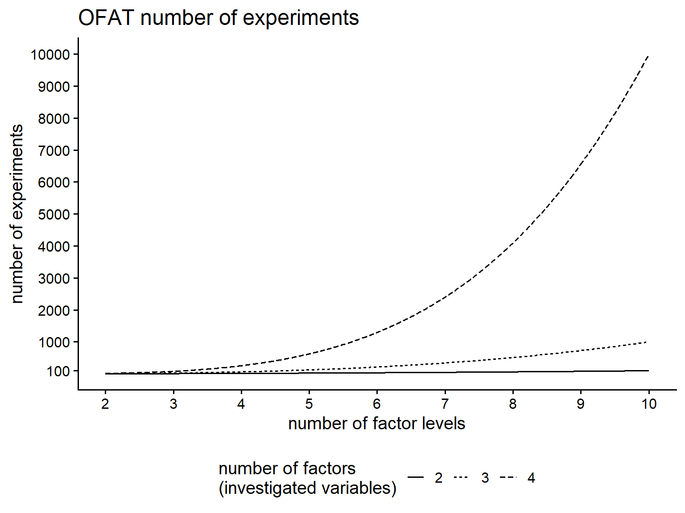
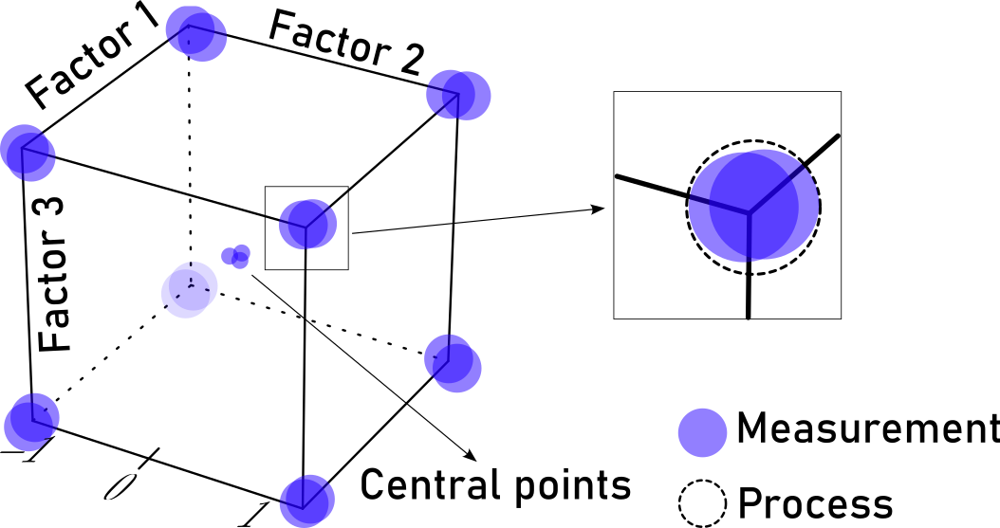
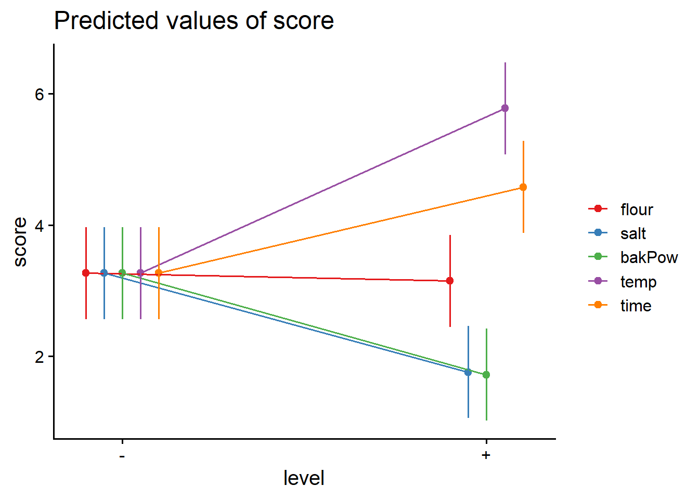

7 Introduction to Design of Experiments (DoE)
7.1 (O)ne (F)actor (A)t a (T)ime
7.2 curse of dimensionality
\[\begin{align} n_{experiments} = n_{levels}^{n_{factors}} \end{align}\]
7.3 Concept of ANOVA

7.4 Basics of Experimental Design

7.5 Experimental planning strategies
1.No planning
- bad way of conducting an experiment
- happens often enough (trial-and-error approach)
2.Plan everything at the beginning
- after definition the entire budget is allocated to perform all possible experiments
- does not take into account intermediate results
- spend money on experiments that contributed nothing to our knowledge of the process
3.Sequential planning
- first stage, a reduced number of trials will be conducted to make decisions about the next stage
- first stage should consume between \(25\%\) and \(40\%\) of the budget
- most of the budget should be spent in subsequent stages, taking into account previous results.
7.6 pizza dough example
- representation of factors and levels for a designed experiment
- example: pizza dough
- food manufacturer is looking for the best recipe for its main product: pizza dough sold in retailers
- three factors shall be determined:
flour,salt, baking powder:bakPow - response will be determined by experts as
score - factors are to be set
low(\(-\)) andhigh(\(+\))
7.7 design matrix
| flour | salt | bakPow | score |
|---|---|---|---|
| - | - | - | NA |
| + | - | - | NA |
| - | + | - | NA |
| + | + | - | NA |
| - | - | + | NA |
| + | - | + | NA |
| - | + | + | NA |
| + | + | + | NA |
Be bold, but not stupid!
7.7.1 progressive experimentation
- OFAT
- will leave out interactions of variables
- \(2^k\): two-level factor experimentation
- including replications
- Screening experiments: to select the most important factors
- Characterizing experiments: to study the model (residuals) of \(Y = f(X)\)
- Optimization experiments: operational minimum value for the process
7.8 Model assumptions
- randomization!
| flour | salt | bakPow | score | ord |
|---|---|---|---|---|
| + | + | - | NA | 1 |
| + | + | + | NA | 2 |
| + | - | + | NA | 3 |
| - | + | - | NA | 4 |
| + | - | - | NA | 5 |
| - | - | - | NA | 6 |
| - | - | + | NA | 7 |
| - | + | + | NA | 8 |
7.9 experimental model

7.10 analytical model

7.11 \(2^k\) factorial Designs
- \(k\)
-
number of factors to be studied, all with \(2\) levels
- \(n\)
-
number of replications \(\rightarrow \text{total number of experiments} = n \times 2^k\)
- \(A,B, \ldots\)
-
factors (uppercase latin letters)
- \(\alpha, \beta, \ldots\)
-
main effects
7.12 complete analytical model
- three factors, \(n\) replications
\[\begin{align} \begin{split} y_{ijkl} = \mu &+ \alpha_i + \beta_j + \gamma_k\\ &+ (\alpha\beta)_{ij} + (\alpha\gamma)_{ik} + (\beta\gamma)_{kl}\\ &+(\alpha\beta\gamma)_{ijk}+\epsilon_{ijkl} \\ \end{split}\\ \begin{split} i = 1,2 \phantom{=} j = 1,2 \phantom{=} k = 1,2 \phantom{=} l = 1 \ldots n \\ \epsilon_{ijkl} \sim N(0,\sigma) \end{split} \nonumber \\ \end{align}\]
- \(\mu\)
-
global mean of the response
- \(\alpha_i\)
-
effect of factor \(A\) at level \(i\)
- \(\beta_j\)
-
effect of factor \(B\) at level \(j\)
- \(\gamma_k\)
-
effect of factor \(C\) at level \(k\)
- \((\alpha\beta)_{ij}\)
-
effect of the interaction of factors \(A\) and \(B\) at levels \(i\) and \(j\)
- \((\alpha\gamma)_{ik}\)
-
effect of the interaction of factors \(A\) and \(C\) at levels \(i\) and \(k\)
- \((\beta\gamma)_{jk}\)
-
effect of the interaction of factors \(B\) and \(C\) at levels \(j\) and \(k\)
- \((\alpha\beta\gamma)_{ijk}\)
-
effect of the interaction of factors \(A,B\) and \(C\) at levels \(i,j\) and \(k\)
- \(\epsilon_{ijkl}\)
-
random error component of the model
7.12.1 pizza dough example raw data
“… bake the pizza for 9min at 180°C …”
| repl | flour | salt | bakPow | score | ord |
|---|---|---|---|---|---|
| 1 | - | - | - | 5.33 | 2 |
| 1 | + | - | - | 6.99 | 4 |
| 1 | - | + | - | 4.23 | 8 |
| 1 | + | + | - | 6.61 | 5 |
| 1 | - | - | + | 2.26 | 1 |
| 1 | + | - | + | 5.75 | 6 |
| 1 | - | + | + | 3.26 | 3 |
| 1 | + | + | + | 6.24 | 7 |
| 2 | - | - | - | 5.70 | 2 |
| 2 | + | - | - | 7.71 | 4 |
| 2 | - | + | - | 5.13 | 8 |
| 2 | + | + | - | 6.76 | 5 |
| 2 | - | - | + | 2.79 | 1 |
| 2 | + | - | + | 4.57 | 6 |
| 2 | - | + | + | 2.48 | 3 |
| 2 | + | + | + | 6.18 | 7 |
7.12.2 pizza dough example summarised data
| flour | salt | bakPow | mean_score |
|---|---|---|---|
| - | - | - | 5.515 |
| - | - | + | 2.525 |
| - | + | - | 4.680 |
| - | + | + | 2.870 |
| + | - | - | 7.350 |
| + | - | + | 5.160 |
| + | + | - | 6.685 |
| + | + | + | 6.210 |
7.12.3 pizza dough recipe full model
doe.model1 <- lm(score ~ flour + salt + bakPow +
flour * salt + flour * bakPow +
salt * bakPow + flour * salt * bakPow,
data = ss.data.doe1)
summary(doe.model1)
Call:
lm(formula = score ~ flour + salt + bakPow + flour * salt + flour *
bakPow + salt * bakPow + flour * salt * bakPow, data = ss.data.doe1)
Residuals:
Min 1Q Median 3Q Max
-0.5900 -0.2888 0.0000 0.2888 0.5900
Coefficients:
Estimate Std. Error t value Pr(>|t|)
(Intercept) 5.5150 0.3434 16.061 2.27e-07 ***
flour+ 1.8350 0.4856 3.779 0.005398 **
salt+ -0.8350 0.4856 -1.719 0.123843
bakPow+ -2.9900 0.4856 -6.157 0.000272 ***
flour+:salt+ 0.1700 0.6868 0.248 0.810725
flour+:bakPow+ 0.8000 0.6868 1.165 0.277620
salt+:bakPow+ 1.1800 0.6868 1.718 0.124081
flour+:salt+:bakPow+ 0.5350 0.9712 0.551 0.596779
---
Signif. codes: 0 '***' 0.001 '**' 0.01 '*' 0.05 '.' 0.1 ' ' 1
Residual standard error: 0.4856 on 8 degrees of freedom
Multiple R-squared: 0.9565, Adjusted R-squared: 0.9185
F-statistic: 25.15 on 7 and 8 DF, p-value: 7.666e-057.12.4 pizza dough recipe elimination model
doe.model2 <- lm(score ~ flour + bakPow,data = ss.data.doe1)
summary(doe.model2)
Call:
lm(formula = score ~ flour + bakPow, data = ss.data.doe1)
Residuals:
Min 1Q Median 3Q Max
-0.84812 -0.54344 0.06063 0.44406 0.86938
Coefficients:
Estimate Std. Error t value Pr(>|t|)
(Intercept) 4.8306 0.2787 17.330 2.30e-10 ***
flour+ 2.4538 0.3219 7.624 3.78e-06 ***
bakPow+ -1.8662 0.3219 -5.798 6.19e-05 ***
---
Signif. codes: 0 '***' 0.001 '**' 0.01 '*' 0.05 '.' 0.1 ' ' 1
Residual standard error: 0.6437 on 13 degrees of freedom
Multiple R-squared: 0.8759, Adjusted R-squared: 0.8568
F-statistic: 45.87 on 2 and 13 DF, p-value: 1.288e-067.12.5 pizza dough statistical model
\[\begin{align} \widehat{score} = 4.83 + 2.45\times flour -1.87 \times bakPow \\ \widehat{score} = 5.12 + 1.23\times flour -0.93 \times bakPow \end{align}\]
7.12.6 main effect plot
7.12.7 interaction plot
7.12.8 model validity
7.12.8.1 residual patterns
7.12.8.2 residual distribution

shapiro.test(doe.model2_aug$.resid)
Shapiro-Wilk normality test
data: doe.model2_aug$.resid
W = 0.90652, p-value = 0.10237.13 Design of Experiments for process improvement
What if …
… not all influencing factors (\(X\)) on the process have been identified?
… some \(X\) depend on external conditions and are not under control?
robust design
… means also including noise factors that are not under our control.
7.13.1 pizza dough example
pizzas came out pretty bad as reported by the customers
pizza quality heavily relies on baking conditions! (\(T = 180°C, t = 9min\))
almost nobody followed the recipe
noise factors are included with two levels
- \(7min\) and \(11min\) as \(t+\) and \(t-\)
- \(160°C\) and \(200°C\) as \(T+\) and \(t-\)
\(2^5\) factorial design with \(2\) replications \(=64\) experimental runs
7.14 linear model - first run
Call:
lm(formula = score ~ (. - repl)^3, data = ss.data.doe2)
Residuals:
Min 1Q Median 3Q Max
-1.20094 -0.32937 0.02625 0.35656 1.07187
Coefficients:
Estimate Std. Error t value Pr(>|t|)
(Intercept) 3.16906 0.42203 7.509 5.09e-09 ***
flour+ 0.07406 0.54902 0.135 0.89340
salt+ -1.47219 0.54902 -2.681 0.01078 *
bakPow+ -1.43219 0.54902 -2.609 0.01293 *
temp+ 2.56156 0.54902 4.666 3.75e-05 ***
time+ 1.49594 0.54902 2.725 0.00967 **
flour+:salt+ 1.71000 0.66214 2.583 0.01378 *
flour+:bakPow+ 2.14000 0.66214 3.232 0.00254 **
flour+:temp+ -1.26250 0.66214 -1.907 0.06414 .
flour+:time+ 0.46375 0.66214 0.700 0.48796
salt+:bakPow+ 0.89250 0.66214 1.348 0.18567
salt+:temp+ -0.19500 0.66214 -0.294 0.76998
salt+:time+ 1.38625 0.66214 2.094 0.04302 *
bakPow+:temp+ -1.17000 0.66214 -1.767 0.08526 .
bakPow+:time+ -1.30375 0.66214 -1.969 0.05628 .
temp+:time+ -3.91125 0.66214 -5.907 7.64e-07 ***
flour+:salt+:bakPow+ 0.14875 0.66214 0.225 0.82346
flour+:salt+:temp+ 1.52375 0.66214 2.301 0.02696 *
flour+:salt+:time+ -1.11875 0.66214 -1.690 0.09930 .
flour+:bakPow+:temp+ 0.22375 0.66214 0.338 0.73728
flour+:bakPow+:time+ 0.09125 0.66214 0.138 0.89112
flour+:temp+:time+ 0.30125 0.66214 0.455 0.65172
salt+:bakPow+:temp+ -0.33125 0.66214 -0.500 0.61977
salt+:bakPow+:time+ 0.33625 0.66214 0.508 0.61451
salt+:temp+:time+ -1.04375 0.66214 -1.576 0.12324
bakPow+:temp+:time+ 2.19125 0.66214 3.309 0.00205 **
---
Signif. codes: 0 '***' 0.001 '**' 0.01 '*' 0.05 '.' 0.1 ' ' 1
Residual standard error: 0.6621 on 38 degrees of freedom
Multiple R-squared: 0.9037, Adjusted R-squared: 0.8404
F-statistic: 14.27 on 25 and 38 DF, p-value: 1.428e-127.15 linear model - stepwise elimination
7.15.1 get rid of non-significant
selectionvar <- step(model.prob1, method="backwards")Start: AIC=-34.13
score ~ ((repl + flour + salt + bakPow + temp + time) - repl)^3
Df Sum of Sq RSS AIC
- flour:bakPow:time 1 0.0083 16.669 -36.102
- flour:salt:bakPow 1 0.0221 16.683 -36.049
- flour:bakPow:temp 1 0.0501 16.710 -35.942
- flour:temp:time 1 0.0908 16.751 -35.787
- salt:bakPow:temp 1 0.1097 16.770 -35.714
- salt:bakPow:time 1 0.1131 16.773 -35.701
<none> 16.660 -34.134
- salt:temp:time 1 1.0894 17.750 -32.080
- flour:salt:time 1 1.2516 17.912 -31.498
- flour:salt:temp 1 2.3218 18.982 -27.784
- bakPow:temp:time 1 4.8016 21.462 -19.926
Step: AIC=-36.1
score ~ flour + salt + bakPow + temp + time + flour:salt + flour:bakPow +
flour:temp + flour:time + salt:bakPow + salt:temp + salt:time +
bakPow:temp + bakPow:time + temp:time + flour:salt:bakPow +
flour:salt:temp + flour:salt:time + flour:bakPow:temp + flour:temp:time +
salt:bakPow:temp + salt:bakPow:time + salt:temp:time + bakPow:temp:time
Df Sum of Sq RSS AIC
- flour:salt:bakPow 1 0.0221 16.691 -38.017
- flour:bakPow:temp 1 0.0501 16.719 -37.910
- flour:temp:time 1 0.0908 16.759 -37.755
- salt:bakPow:temp 1 0.1097 16.779 -37.682
- salt:bakPow:time 1 0.1131 16.782 -37.670
<none> 16.669 -36.102
- salt:temp:time 1 1.0894 17.758 -34.050
- flour:salt:time 1 1.2516 17.920 -33.469
- flour:salt:temp 1 2.3218 18.991 -29.756
- bakPow:temp:time 1 4.8016 21.470 -21.902
Step: AIC=-38.02
score ~ flour + salt + bakPow + temp + time + flour:salt + flour:bakPow +
flour:temp + flour:time + salt:bakPow + salt:temp + salt:time +
bakPow:temp + bakPow:time + temp:time + flour:salt:temp +
flour:salt:time + flour:bakPow:temp + flour:temp:time + salt:bakPow:temp +
salt:bakPow:time + salt:temp:time + bakPow:temp:time
Df Sum of Sq RSS AIC
- flour:bakPow:temp 1 0.0501 16.741 -39.826
- flour:temp:time 1 0.0908 16.782 -39.670
- salt:bakPow:temp 1 0.1097 16.801 -39.598
- salt:bakPow:time 1 0.1131 16.804 -39.585
<none> 16.691 -38.017
- salt:temp:time 1 1.0894 17.780 -35.971
- flour:salt:time 1 1.2516 17.942 -35.390
- flour:salt:temp 1 2.3218 19.013 -31.682
- bakPow:temp:time 1 4.8016 21.492 -23.836
Step: AIC=-39.83
score ~ flour + salt + bakPow + temp + time + flour:salt + flour:bakPow +
flour:temp + flour:time + salt:bakPow + salt:temp + salt:time +
bakPow:temp + bakPow:time + temp:time + flour:salt:temp +
flour:salt:time + flour:temp:time + salt:bakPow:temp + salt:bakPow:time +
salt:temp:time + bakPow:temp:time
Df Sum of Sq RSS AIC
- flour:temp:time 1 0.0908 16.832 -41.480
- salt:bakPow:temp 1 0.1097 16.851 -41.408
- salt:bakPow:time 1 0.1131 16.854 -41.395
<none> 16.741 -39.826
- salt:temp:time 1 1.0894 17.830 -37.791
- flour:salt:time 1 1.2516 17.993 -37.211
- flour:salt:temp 1 2.3218 19.063 -33.513
- bakPow:temp:time 1 4.8016 21.543 -25.687
- flour:bakPow 1 22.5032 39.244 12.699
Step: AIC=-41.48
score ~ flour + salt + bakPow + temp + time + flour:salt + flour:bakPow +
flour:temp + flour:time + salt:bakPow + salt:temp + salt:time +
bakPow:temp + bakPow:time + temp:time + flour:salt:temp +
flour:salt:time + salt:bakPow:temp + salt:bakPow:time + salt:temp:time +
bakPow:temp:time
Df Sum of Sq RSS AIC
- salt:bakPow:temp 1 0.1097 16.941 -43.064
- salt:bakPow:time 1 0.1131 16.945 -43.051
<none> 16.832 -41.480
- salt:temp:time 1 1.0894 17.921 -39.466
- flour:salt:time 1 1.2516 18.083 -38.889
- flour:salt:temp 1 2.3218 19.154 -35.209
- bakPow:temp:time 1 4.8016 21.633 -27.418
- flour:bakPow 1 22.5032 39.335 10.847
Step: AIC=-43.06
score ~ flour + salt + bakPow + temp + time + flour:salt + flour:bakPow +
flour:temp + flour:time + salt:bakPow + salt:temp + salt:time +
bakPow:temp + bakPow:time + temp:time + flour:salt:temp +
flour:salt:time + salt:bakPow:time + salt:temp:time + bakPow:temp:time
Df Sum of Sq RSS AIC
- salt:bakPow:time 1 0.1131 17.054 -44.638
<none> 16.941 -43.064
- salt:temp:time 1 1.0894 18.031 -41.075
- flour:salt:time 1 1.2516 18.193 -40.502
- flour:salt:temp 1 2.3218 19.263 -36.844
- bakPow:temp:time 1 4.8016 21.743 -29.094
- flour:bakPow 1 22.5032 39.445 9.025
Step: AIC=-44.64
score ~ flour + salt + bakPow + temp + time + flour:salt + flour:bakPow +
flour:temp + flour:time + salt:bakPow + salt:temp + salt:time +
bakPow:temp + bakPow:time + temp:time + flour:salt:temp +
flour:salt:time + salt:temp:time + bakPow:temp:time
Df Sum of Sq RSS AIC
<none> 17.054 -44.638
- salt:temp:time 1 1.0894 18.144 -42.675
- flour:salt:time 1 1.2516 18.306 -42.106
- flour:salt:temp 1 2.3218 19.376 -38.469
- salt:bakPow 1 3.7588 20.813 -33.891
- bakPow:temp:time 1 4.8016 21.856 -30.762
- flour:bakPow 1 22.5032 39.558 7.2087.15.2 main effect and interaction

7.15.3 check residuals
7.15.4 pragmatic result
| flour | salt | bakPow | score | T1t1 | T2t1 | T1t2 | T2t2 | Mean | SD |
|---|---|---|---|---|---|---|---|---|---|
| - | - | - | 5.515 | 3.675 | 5.120 | 4.185 | 3.900 | 4.479 | 0.6352559 |
| + | - | - | 7.350 | 3.370 | 4.520 | 5.050 | 2.940 | 4.646 | 0.9814615 |
| - | + | - | 4.680 | 0.955 | 4.910 | 5.295 | 1.170 | 3.402 | 2.3394319 |
| + | + | - | 6.685 | 3.590 | 5.895 | 5.625 | 3.870 | 5.133 | 1.1827299 |
| - | - | + | 2.525 | 1.915 | 3.055 | 1.725 | 1.700 | 2.184 | 0.6446882 |
| + | - | + | 5.160 | 3.140 | 5.010 | 5.535 | 2.900 | 4.349 | 1.3216617 |
| - | + | + | 2.870 | 1.215 | 1.860 | 3.040 | 1.310 | 2.059 | 0.8388223 |
| + | + | + | 6.210 | 5.805 | 6.110 | 5.980 | 5.965 | 6.014 | 0.1249667 |